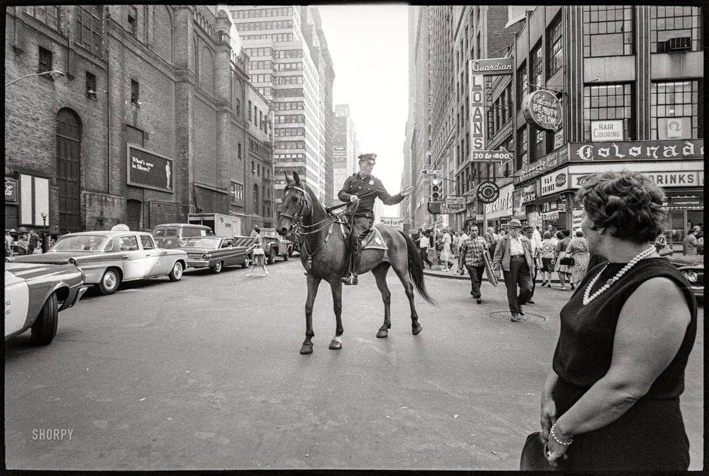

June 1964. New York. “Police officer on horse.” Photo by Angelo Rizzuto…this is looking down 7th Avenue at West 40th Street and the rear of the Metropolitan Opera House…at left, an extended-wheelbase 1962 Studebaker Lark Cruiser taxi, behind the 1964 Ford Falcon hardtop. (Photo and caption text via shorpy.com)